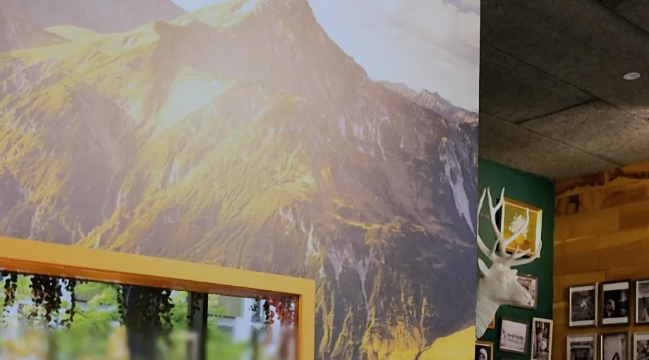

MontChalet · À la façon des chalets du Tyrol du Sud
Bistro • Brasserie • Biergarten
You are not in the mountains. The mountains are in you.
Cozy mornings at MontChalet
Sundays at the Chalet
Brunch, chaque dimanche, 11:00–15:00
Des saveurs à découvrir, des instants à savourer.

MontChalet Bar

- Whisky
- Gin
- Rhum
- Espresso martini
- Spritz